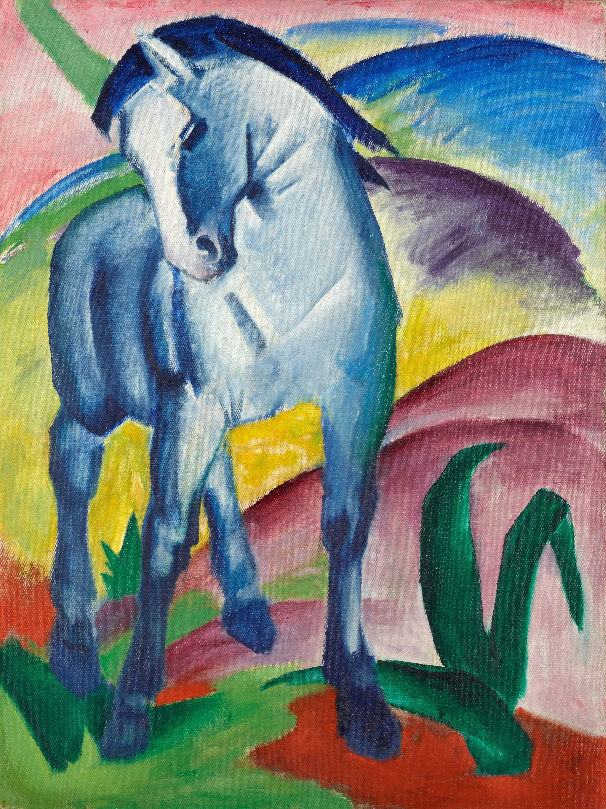

生理学研究所が行う霊長類ニューロサイエンス研究会でポスター賞を受賞しました。

博士課程学生
吉田 昂祐
認知計算神経科学・社会神経科学
所属:
東京大学 / 理研CBS 思考・実行機能研究チーム
ニュース
日本学術振興会特別研究員DC1に採択されました。
中谷財団より奨学生に選出されました。
京都で開催されたSymposium on Contrarianismにて研究発表を行いました。
日本神経回路学会(JNNS)より研究会開催助成金を獲得しました。
WINGS-CFSに採択されました。